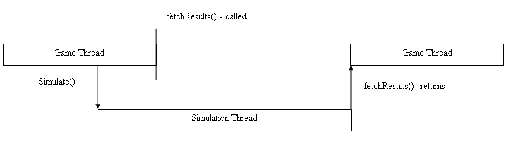
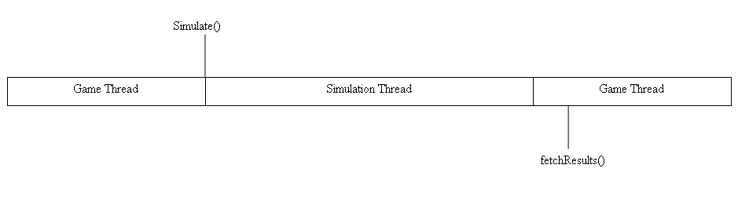
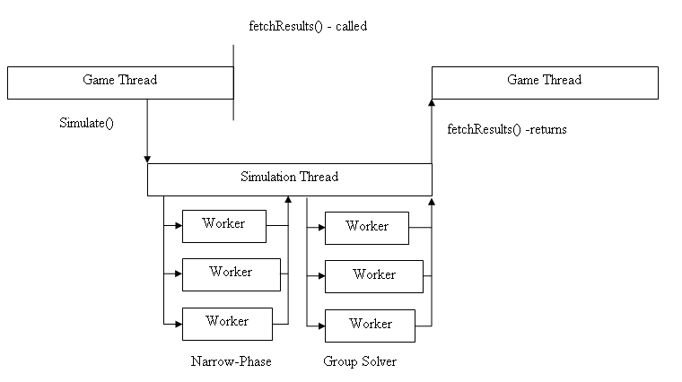
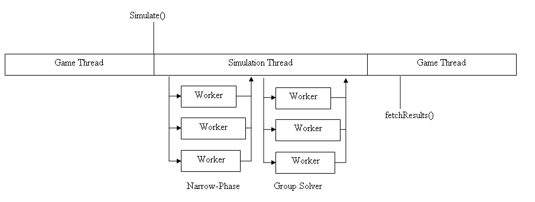

Threading Interface
The PhysX SDK 2.4 and above gives the user more control over
threading
within the SDK. There are two main orthogonal features:
- The user can specify which thread the main simulation runs on.
- Fine grained threading of the simulation.
- Under some circumstances, the SDK can provide background work to
the application (e.g., mesh cooking when the Hardware Scene
Manager is in use).
Main Simulation Thread Control
The thread upon which the main simulation runs can be controlled with
the NX_SF_SIMULATE_SEPARATE_THREAD flag. The flag, which is raised by default, is applied to the
flag's member of the scene descriptor.
When the NX_SF_SIMULATE_SEPARATE_THREAD is raised, the SDK creates an
internal thread upon which the simulation is performed (Simulation
Thread). This allows the simulation to execute in parallel with the
game code during the time between the simulate() call
and the fetchResults() call.

The alternative, when the NX_SF_SIMULATE_SEPARATE_THREAD is not raised,
is to perform all the work associated with the simulation during the
call to simulate(). This allows the application control over the thread
upon which the simulation executes by choosing an appropriate thread to
call simulate(). fetchResults() must still be called, but it will
return immediately with the results and not be blocked if simulate() has finished or block as appropriate if it is still executing on another thread.
The ability to control which thread the user executes the simulation on is particularly important for platforms which statically allocate software threads to hardware threads(for example the XBox360). In these situations the user should take control of which thread the simulation executes on (by default the SDK runs the simulation on the hardware thread which creates the scene).
- Create a software thread to run the simulation on.
- Associate that thread with an appropriate hardware thread.
- Create the SDK with NX_SF_SIMULATE_SEPARATE_THREAD not set.
- Then during simulation:
- Update SDK state.
- Set an event to trigger the thread created above to call simulate().
- Do additional processing.
- Call fetchResults() which will block until simulate() finishes.
NOTE: Ensure
that the SDK is called from a single thread at a time (i.e., provide synchronization which ensures all state modification is
complete on another thread before the thread which calls simulate
enters the SDK).

Example
//Create scene with simulation execute in the call to simulate()
NxSceneDesc mySceneDesc;
//Fill in scene desc...
mySceneDesc.flags &= ~NX_SF_SIMULATE_SEPARATE_THREAD;
NxScene *newScene=gPhysicsSDK->createScene(sceneDesc);
/***************************************************************************/
//Create scene with simulation execute on another thread
NxSceneDesc mySceneDesc;
//Fill in scene desc...
mySceneDesc.flags |= NX_SF_SIMULATE_SEPARATE_THREAD;
NxScene *newScene=gPhysicsSDK->createScene(sceneDesc);
Fine Grained Simulation Threading
The SDK provides an option to split the
simulation processing over a number of worker threads (on some
platforms). For example, all the shape pairs
which need contact point generation can be divvied up by the SDK and have multiple threads
generating contact points at the same time.
By default, fine grained division of the simulation is not enabled. To
enable fine grained threading, the user must
specify the NX_SF_ENABLE_MULTITHREAD flag in NxSceneDesc.
When performing each simulation using a number of threads, there is
a main simulation thread which controls the division of work and
performs tasks which must be executed in serial. This leads to two
additional threading configurations when combined with the
NX_SF_SIMULATE_SEPARATE_THREAD flag.
NX_SF_SIMULATE_SEPARATE_THREAD is specified and fine grained threading
is enabled displayed in the diagram below:

When NX_SF_SIMULATE_SEPARATE_THREAD is not specified, it is displayed as follows:

The SDK provides the following two distinct ways to control how work is scheduled
between worker threads:
- SDK Managed Work Queue
- User Managed Work Queue
These methods are mutually exclusive; either the SDK maintains an
internal work queue and executes work items with internal threads plus
user polling, or the user takes over complete control of the work item
scheduling.
SDK Managed Work Queue
To enable SDK managed threading, the user must specify the
NX_SF_ENABLE_MULTITHREAD flag and not supply a custom scheduler. In
addition, the SDK can be instructed to create threads
internally to process work items by setting the
internalThreadCount member of NxSceneDesc to the number of threads
which should be managed by the SDK.
The SDK supports user control over which processor an internal thread
is allocated to on systems which statically allocate threads to
processors, such as the X Box 360. This is accomplished through the
NxSceneDesc member threadMask.
When the SDK is allocating internal threads to logical processors, it
scans from
the least significant bit of threadMask, allocating the first internal
thread to the processors corresponding to the first set bit, to the processors corresponding to subsequent bits.
For example, 0xffffffff would allocate internal threads to every
processor starting at 0 and continuing to 31. If
more threads are specified than set bits, the SDK
wraps around to the beginning and allocates a second thread to the set
bits. Setting the threadMask to 0 causes the SDK to pick an appropriate
setting.
Example
NxSceneDesc mySceneDesc;
//Instruct the SDK to use its multi threaded core.
mySceneDesc.flags |= NX_SF_ENABLE_MULTITHREAD;
//Instruct the SDK to allocate internal threads to each logical processor, skipping the first.
mySceneDesc.threadMask=0xfffffffe;
//The SDK creates two additional worker threads.
mySceneDesc.internalThreadCount = 2;
NxScene *newScene=gPhysicsSDK->createScene(mySceneDesc);
Polling for Work
To execute work items from your own threads,
call the pollForWork() member of NxScene as shown below:
NxThreadPollResult pollForWork(NxThreadWait wait);
void resetPollForWork();
When calling pollForWork(), specify how long to wait for
a work item to become available. The function can return immediately if
there are no work items to execute, or it can block until a work item
becomes available:
enum NxThreadWait
{
/* The poll function will return immediately if there is no work available.*/
NX_WAIT_NONE,
/* The poll function will wait until the end of the simulation tick for work.*/
NX_WAIT_SIMULATION_END,
/* The poll function will wait until the shutdownWorkerThreads() member of NxScene is called or
a work item has been processed. */
NX_WAIT_SHUTDOWN
};
When the user instructs pollForWork() to wait using
NX_WAIT_SIMULATION_END, it
blocks
until the simulation is complete or it is able to execute a single work
item. When the simulation step completes, subsequent calls to
pollForWork() will return immediately (even if it is
instructed to wait) until resetPollForWork() is called. This avoids a
race condition when the scene completes a step. Without
resetPollForWork(), the simulation could start a new step before
threads which have called pollForWork() have the chance to return.
Alternatively, if NX_WAIT_SHUTDOWN
is specified, threads will wait past the end of a simulation step
until a work item is executed or NxScene::shutdownWorkerThreads() is
called. shutdownWorkerThreads() must be called before the scene is
destroyed so that all user threads can exit the SDK safely (i.e., call shutdownWorkerThreads and block until all user created
threads have left the SDK).
pollForWork() returns a status code describing the reason for its
return as shown below:
enum NxThreadPollResult
{
/* There is no work to execute at the time the function was called. */
NX_THREAD_NOWORK,
/* There may be more work waiting for execution. */
NX_THREAD_MOREWORK,
/* The function returned because the simulation tick finished. */
NX_THREAD_SIMULATION_END,
/* The function returned because the user call shutdownWorkerThreads(). */
NX_THREAD_SHUTDOWN,
};
The status returned by pollForWork() should be considered more of a
hint than a guarantee that the scene is in a specific state, since the
state could change at any point after pollForWork() releases its
internal lock. For example, another thread could execute all items
remaining in the work queue or another thread could call
resetPollForWork().
Example
threadFunctions()
{
while(!quit)
{
//Wait for simulation to begin...
do
{
pollResult=scene->pollForWork(NX_WAIT_SIMULATION_END);
}while((pollResult==NX_THREAD_MOREWORK)||(pollResult==NX_THREAD_NOWORK));
}
}
/***************************************************/
//Main thread
//Simulation has ended...
//Wait for all threads to block...
scene->resetPollForWork();
//Signal threads that simulation has started
simulate()
User Managed Work Queue
For complete control of the way work items are executed, the user
must implement their own scheduler interface to provide to the SDK:
class UserScheduler : public NxUserScheduler
{
public:
virtual void addTask(NxTask *task);
virtual void addBackgroundTask(NxTask *task);
virtual void waitTasksComplete() ;
};
Then when creating the scene, provide the scheduler interface using the customScheduler member of NxSceneDesc. NOTE: When
specifying a user scheduler, the internalThreadCount and backgroundThreadCount members should be
set to zero and the pollForWork()/resetPollForWork() functions should
not be called.
The SDK will call NxScheduler::addTask() to queue up a work item to be
executed by the application. At points where the SDK must synchronize,
it will call waitTasksComplete(). On a call to waitTasksComplete() the
application will block until all tasks which were submitted using
addTask() have been completed (i.e., the application has called the
execute() method of each task and then returned).
A typical implementation of waitTasksComplete() will reuse the calling
thread (simulation thread) to execute work items. When the queue is
drained it will block until all in progress work items are also
complete.
waitTasksComplete() will always be called in the context of the main
simulation thread. However, the application should not assume that
addTask() will only be called in that context, as, in future versions, alternative threads may add work to the
scheduler.
addBackgroundTask() allows the SDK to submit tasks to the user which
are not time critical. For example, when using the Hardware Scene
Manager the SDK may submit a task to cook mesh data into a form which
is suitable for fluid simulation on the hardware. Tasks which are
submitted with addBackgroundTask() need not be completed when
waitTasksComplete() returns.
To execute work items, the SDK provides the simple NxTask interface below:
class NxTask
{
public:
virtual void execute() = 0;
};
Example
class CustomScheduler : public NxUserScheduler
{
CustomScheduler(){}
~CustomScheduler(){}
virtual void addTask(NxTask *task)
{
//Add task to work queue.
}
virtual void addBackgroundTask(NxTask *task)
{
//Add task to background work queue.
}
virtual void waitTasksComplete()
{
//Wait for all tasks in the work queue to complete.
}
};
CustomScheduler gCustomScheduler;
// .....
NxSceneDesc mySceneDesc;
//Instruct the SDK to use its multi-threaded core.
mySceneDesc.flags |= NX_SF_ENABLE_MULTITHREAD;
mySceneDesc.customScheduler = &gCustomScheduler;
NxScene *newScene=gPhysicsSDK->createScene(mySceneDesc);
Background Tasks
In addition to regular simulation tasks, the SDK can also submit
background tasks to the user work queue or the SDK managed work queue.
These tasks are not time critical (i.e., do not need to be completed within a
specific simulation step). Processing of these tasks is handled through
the addBackgroundTask() member of the user supplied scheduler or
through the pollForBackgroundWork() member of NxScene.
The user can specify SDK managed threads to execute background work
using the NxSceneDesc::backgroundThreadCount and backgroundThreadMask
members. These operate in a similar way to
NxSceneDesc::internalThreadCount; however, threads are created for the
sole purpose of executing background tasks.
When using pollForBackgroundWork(), the NX_WAIT_SIMULATION_END does not
make sense since background tasks are not associated with a particular
simulation step.
Performance
Performance for fine grained threading (i.e., splitting the simulation step into multiple work items) is highly
dependant on
the configuration of the scene. In some cases, the threaded version may
run
more slowly than the non-threaded version because there are insufficient
opportunities for parallel execution and the synchronization imposes a
overhead.
However, in scenes
which consist of many shape pairs (preferably with non-trivial contact
routines, e.g., convex vs. mesh)
and many equally sized islands, the internal threading is able to
achieve
speed-ups to 40%.
Memory Usage
- Memory utilization, when using
NX_SIMULATE_SEPARATE_THREAD, should not change (though there may be a small
memory
reduction when NX_SIMULATE_SEPARATE_THREAD is not specified due to
the lack of an additional thread).
- Memory utilization,
when running each simulation
step in parallel, is non-trivial.
- Memory
utilization for the near phase computation requires memory proportional to the number of vertices in
the largest triangle mesh for each additional thread.
- Memory
utilization for the joint/contact solver requires memory proportional
to the size of the largest body
group per
additional thread.
- Memory is required to
describe
each work unit. This should not be as significant as the other
overheads, but
it is dependant on the number of threads and the rate at which they
process
work units. Because of the additional memory cost associated with entering the SDK
with each additional thread, the user should try and make sure as few
separate threads as possible enter the SDK. If a thread executes a work
item on the first frame and never executes another work item, then that
thread will still incur a memory overhead until the scene is destroyed
(future versions of the SDK may support deleting the additional memory
associated with a thread).
- The SDK uses dynamic stack allocations in certain places in order to improve
performance. In certain rare situations (e.g. large numbers of actors placed
in the same position at once) these allocations may be too big to fit on the stack, and
should fall back to heap allocation. There is an automatic threshold that
decides when to do this, equal to half the smallest SDK-allocated thread stack
size (set through NxSceneDesc::simThreadStackSize and ::workerThreadStackSize) for
one allocation.
You may override this using the NxFoundationSDK::setAllocaThreshold() method.
Take care; too small a threshold will impact performance, too large may
precipitate stack overflows.
Caveats
- When running a simulation using fine grained threading, the simulation will be non-deterministic as a
result of the dynamic allocation of work units between the threads. At
each step, the work units can be allocated in a different order
with different results due to the order of floating point
operations
changing.
- The SDK requires two Thread Local Storage (TLS) slots per scene, with one additional TLS slot required when the profiler is enabled. The
number of TLS slots available is platform specific, but generally in
the region of 64.
Samples
Sample Threading
API Reference
Copyright © 2008 NVIDIA Corporation, 2701 San Tomas Expressway, Santa Clara, CA 95050 U.S.A. All rights reserved. www.nvidia.com